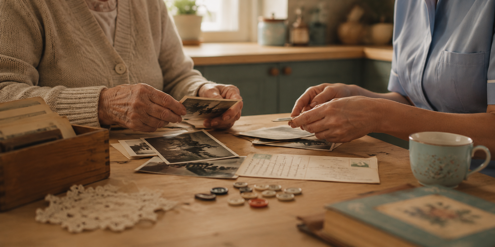

20 Activities for People with Dementia at Home
Simple, meaningful ways to fill the day — put together from over 10 years as a live-in dementia carer.

Filling the hours of a day with dementia can feel harder than it should. Not every activity needs to be big or complicated — some of the most meaningful moments come from the smallest things. Here are 20 activities I've used again and again, grouped by the kind of moment they're good for.
Conversation and reminiscence
- Old photo sorting. No pressure to remember names or dates — just look, and let the stories come if they come.
- "Tell me about..." prompts. Their wedding day, their first job, their childhood street. Open questions work better than quizzes.
- Looking through old objects. A ration book, a war medal, a recipe card in their own handwriting — touch brings memory in a way photos alone don't.
- Talking about the news, gently. Not to test them, just to give the day a shape and something to react to.
- Letter writing (real or pretend). Writing to a grandchild, or an old friend, even if it's never sent.
Music and movement
- Songs from their teens and twenties. Musical memory often stays strong long after other memories fade.
- Simple dancing or swaying, seated or standing. Doesn't need to look like dancing to feel good.
- Humming or singing along, even without full lyrics. The tune matters more than getting the words right.
- Gentle stretching to music. A nice bridge between "activity" and rest.
Sensory activities
- Hand massage with a nice-smelling cream. Calming, and a good way to connect through touch.
- Folding soft laundry or fabric. Familiar, repetitive, and quietly satisfying.
- Smelling herbs or flowers from the garden. Rosemary and lavender tend to get the strongest reactions.
- Sorting buttons, beads, or coins by colour or size. Good for hands that want something to do.
- Weighted or textured blankets and cushions. Especially useful in the evening, when things can feel more unsettled.
Practical, everyday tasks
- Simple baking — stirring, pouring, kneading. The smell alone does a lot of the work.
- Watering plants or light gardening. A task with a clear beginning and end.
- Setting the table. Familiar hands often remember this even when words are harder to find.
- Sorting post or old cards. Purposeful, low-stakes, easy to pick up and put down.
If you're looking for ready-made conversation prompts and memory games rather than planning everything from scratch, I built Together for exactly this — after years of finding what actually worked, and what didn't, as a live-in carer.
For harder moments
- A slow walk, even just to the end of the garden. Change of scene without overstimulation.
- Sitting quietly together with the radio low. Not every moment needs an activity — sometimes presence is the activity.
None of these need to go perfectly. Some days an activity lasts two minutes, other days twenty. The goal isn't to fill the day — it's to find small pockets of connection inside it.
Together and WithYou were both built from moments exactly like these — Together for connection and conversation, WithYou as a practical toolkit for carers.
Explore Together and WithYou